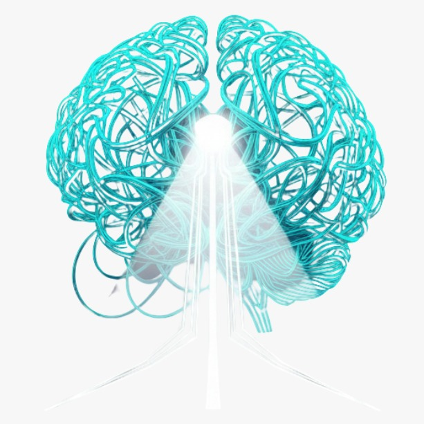
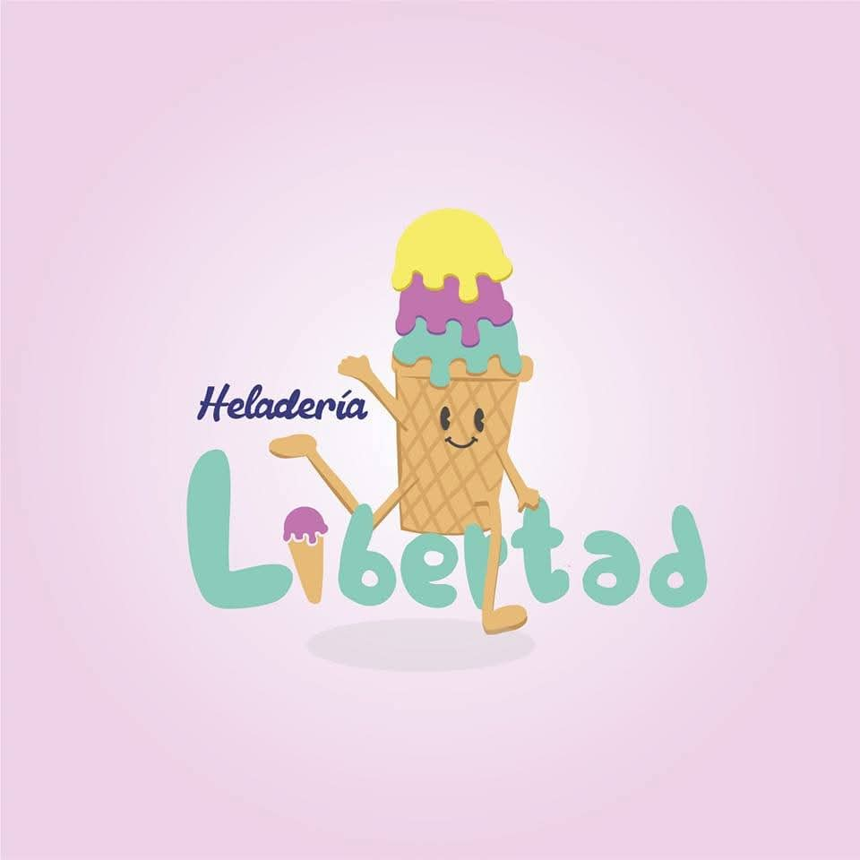
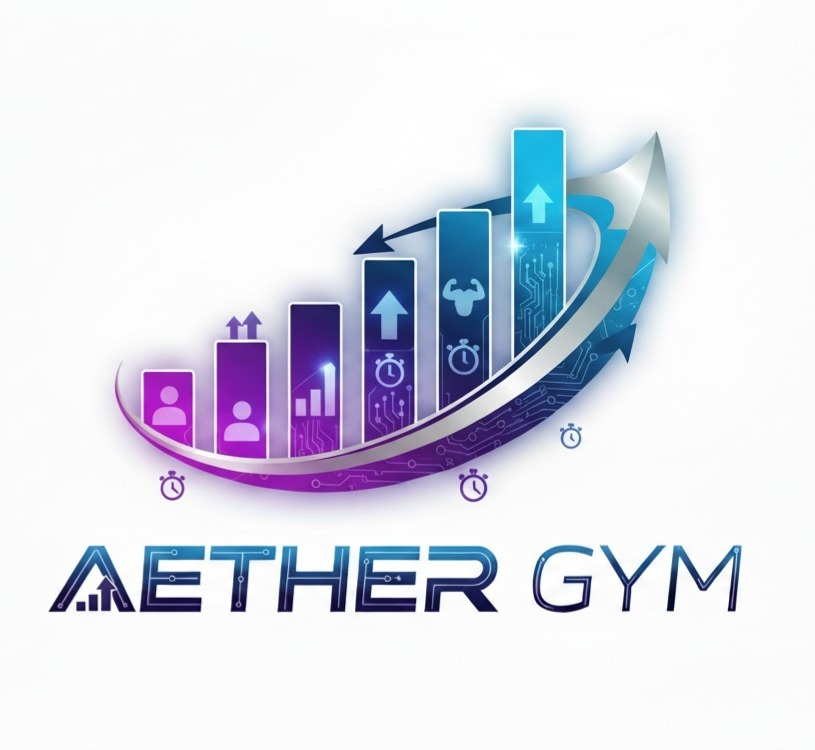

SOFTWARE & DATA ENGINEER
Inicializando protocolos de desarrollo. Soy un TSU en Desarrollo de Software de 19 años. Me apasiona la estructuración de datos, arquitecturas escalables y soluciones operativas eficientes.

¿Qué es?: Es un sistema integral de evaluación de proyectos. Funciona como un ecosistema Full-Stack bajo una arquitectura Cliente-Servidor desacoplada.
Tipo de Plataforma: Híbrida (App de Kiosko y Panel Web). La app del kiosko inmersiva está construida con Flutter e incluye animaciones cinematográficas, mientras que el panel administrativo ultrarrápido es web, creado con Vanilla JS. Todo está respaldado por un backend en C# (ASP.NET Core) y una base de datos en MongoDB Atlas.
¿Qué soluciona?: Automatiza y estructura el análisis de métricas y la evaluación de proyectos a partir de reseñas en lenguaje natural.
¿Cómo lo soluciona?: Integra el motor de Inteligencia Artificial Google Gemini 2.5 Flash mediante Prompt Engineering avanzado. La IA procesa las reseñas en lenguaje natural y extrae métricas estructuradas en un formato JSON determinista. Además, asegura la integridad de la información mediante una validación estricta de esquemas en MongoDB Atlas.
¿Qué es?: Es una plataforma de turismo sostenible y un ecosistema digital diseñado para la gestión de turismo en Homún, Yucatán.
Tipo de Plataforma: Web y Móvil. Construida con React, Flutter, Node.js, Express y PostgreSQL (Supabase).
¿Qué soluciona?: Facilita la conexión entre guías locales y turistas de todo el mundo, al mismo tiempo que automatiza la gestión financiera de los recorridos.
¿Cómo lo soluciona?: Mediante un sistema de reservaciones dinámico y perfiles diferenciados que cuentan con autenticación segura. A nivel técnico, resuelve la complejidad de los datos utilizando una base de datos relacional normalizada hasta la Tercera Forma Normal (3FN). Además, incorpora una lógica financiera automatizada encargada de calcular de manera precisa las comisiones para los guías.

¿Qué es?: Es un E-commerce y un sistema de gestión Serverless.
Tipo de Plataforma: Aplicación Web (Single Page Application). Desarrollada con Angular, Supabase y Vercel.
¿Qué soluciona?: Centraliza los pedidos en línea y la administración del inventario de la heladería en tiempo real, garantizando seguridad y alta disponibilidad sin necesidad de mantener un servidor tradicional.
¿Cómo lo soluciona?: Emplea una arquitectura Serverless con despliegue continuo (CI/CD) a través de GitHub y Vercel. Para la gestión, cuenta con un panel de administración oculto que integra un "Monitor Radar" vía WebSockets, el cual notifica los pedidos entrantes con alertas sonoras en tiempo real. Para la seguridad, implementa políticas de Row Level Security (RLS) directamente en SQL para proteger las rutas administrativas y los datos sensibles.

¿Qué es?: Es un sistema de gestión deportiva y gamificación.
Tipo de Plataforma: Aplicación Móvil. Desarrollada utilizando Flutter, Supabase e Isar/SQLite.
¿Qué soluciona?: Fomenta la disciplina en los usuarios mediante el registro inmutable de su historial de fuerza, resolviendo el problema de la dependencia de una conexión a internet para entrenar.
¿Cómo lo soluciona?: Implementa una robusta estrategia "Offline First", permitiendo el almacenamiento local en el dispositivo (Isar/SQLite) que luego se sincroniza en segundo plano con la base de datos principal al detectar conexión a internet. Usa una técnica de "Desacoplamiento Total" en la base de datos. Para retener a los usuarios, incluye un análisis de sobrecarga progresiva y un sistema de gamificación llamado "Guardián", además de un módulo social que genera IDs únicos automáticamente para crear competencia entre los miembros.
TSU EN DESARROLLO DE SOFTWARE
2024 - ACTUAL | MÉRIDA, YUCATÁN
SISTEMAS COMPUTACIONALES
2020 - 2023
TIMUCUY, YUCATÁN
Mantenimiento preventivo y correctivo de hardware/software en laptops. Actualización de sistemas operativos y resolución proactiva de problemas.
JavaScript, TypeScript, Dart, C#, Python, Java, C++, PHP, HTML, CSS.
Flutter, Angular, React, Next.js, Node.js, Express.js, Laravel, .NET Core, FastAPI, Serverless, CI/CD.
PostgreSQL, MySQL, MongoDB, Firebase, Supabase, Isar/SQLite, Git, GitHub, Docker, Postman, VS Code, Gemini AI.